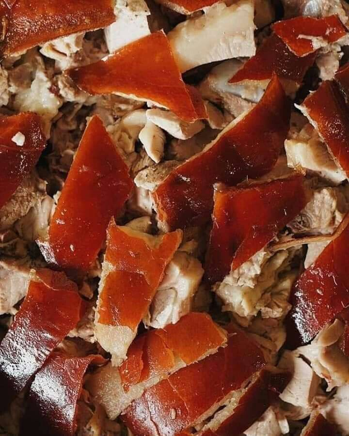
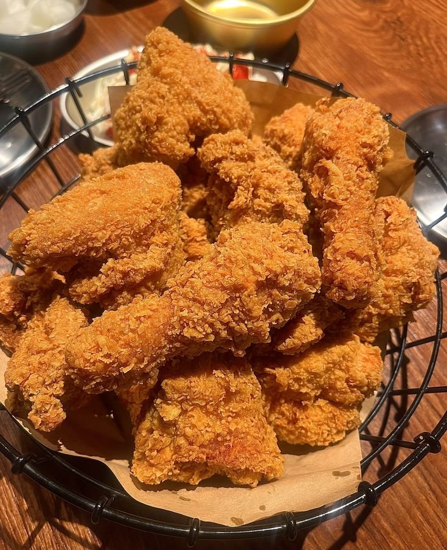
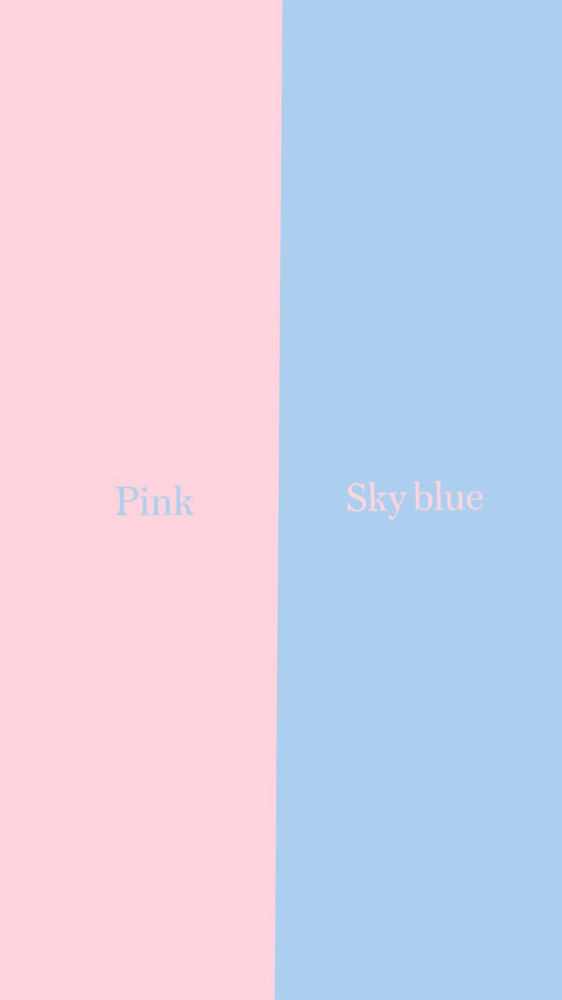

My Favorite Things
A Little About My Favorites
My favorite things show some of the simple things that make me happy. I enjoy good food, relaxing activities, music, and things that help me feel comfortable and peaceful.
My Favorite Foods
Food is one of the things I enjoy the most. Here are some of my favorite foods and drinks:
- Lechon
- Matcha
- French Fries
- Chicken
My Favorite Food Gallery
These pictures show some of the food and drinks that I enjoy.




My Favorite Things
| Category | My Favorite | The Reason |
|---|---|---|
| Favorite Colors | Blue, Pink, and Black | They look cool, calming, and stylish |
| Favorite Animal | Cats | Cute and relaxing |
| Favorite Activity | Sleeping | To recharge and rest |
My Favorite Colors
My favorite colors are blue, pink, and black. I like blue because it feels calm and peaceful, pink because it feels fun and cheerful, and black because it looks simple and stylish.
My Favorite Colors
This image shows my three favorite colors: blue, pink, and black.

My Favorite Song
This song helps me relax and stay motivated. Music is one of the things I enjoy when I have free time.
A Little Reminder
"The little things we enjoy can make our days better."